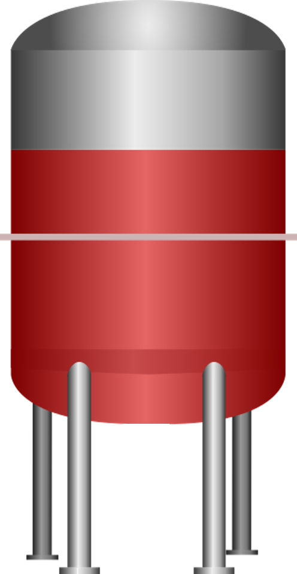
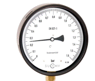
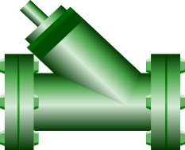
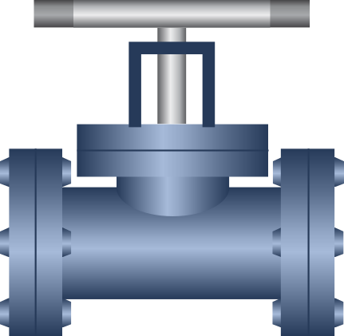
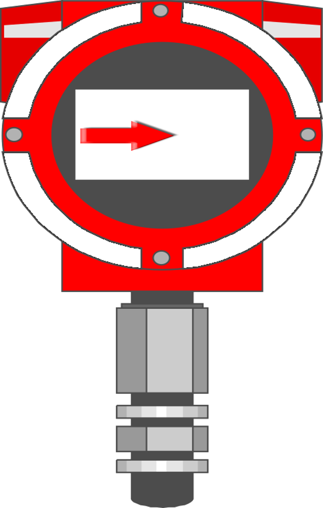
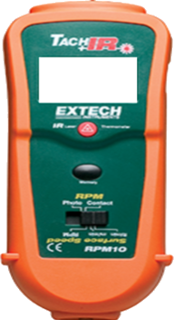
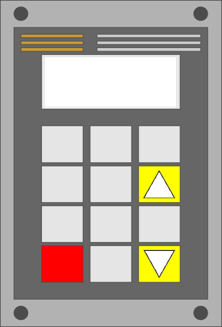
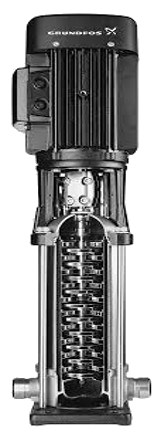

Laboratorio de Fluidos: BOMBAS EN SERIE
Banco de pruebas hidráulico
Ingresa el nombre del estudiante






3600
1
BOMBAS EN SERIE · 1 RODETEPresión de descarga0,00 bar
Caudal0,00 l/s
Tacómetro0 rpm
Apertura0 %
H = A + BQ + CQ²H = Aα² + BαQ + CQ²H = n (A + BQ + CQ²)